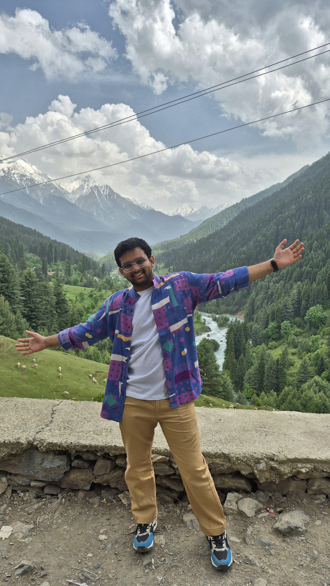

Hi. I am Joyal Nilesh Shah.
I am an Artistic Engineer transitioning into Strategic Leadership. I apply creative frugality to find hidden utility in simple things, from turning leftover paint into wall art to hunting down operational bottlenecks in enterprise software.
See how I deliver results